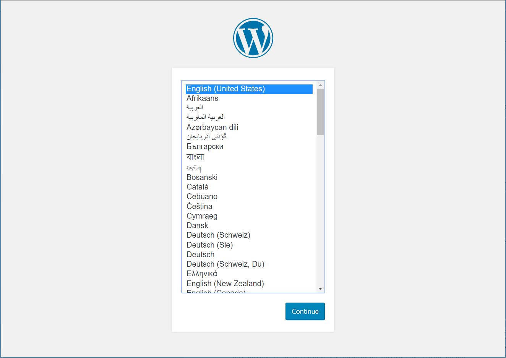

Set up WordPress* on a LAMP web server
This tutorial shows you how to install the WordPress* components on your Clear Linux OS LAMP server. At the end of Set up a LAMP web server on Clear Linux* OS, you created a WordPress-ready database using phpMyAdmin* and MariaDB*. Now that the LAMP server is up and running, you can add the WordPress components needed to host a WordPress website on your system.
Before you begin
This tutorial assumes that you have successfully completed Install Clear Linux* OS from the live desktop and you have Set up a LAMP web server on Clear Linux* OS.
Create a WordPress server
WordPress can be installed in a variety of ways. These instructions are written for users who have followed our instructions for installing phpMyAdmin when they set up a LAMP web server. Note that all steps in this tutorial have been tested using a NUC6i5SYH Intel® NUC. Visit the NUC6i5SYH product page for detailed information.
Numerous online articles are available to help you name your website and acquire the necessary certificates. Those tasks are beyond the scope of this tutorial.
You can take several actions to harden your website from attacks. The security of your website and the data it contains are complex and ever-evolving tasks. Prioritize security if you plan to expose your website to the outside world. This tutorial does not address security measures that you can take to harden your site but we strongly encourage you to take action.
Note
Throughout this tutorial, we reference your website name as <your_website>.
Download WordPress and manage directories
For this tutorial, you will create a WordPress blog that can be accessed at: http://<your_website>/blog.
To accomplish this setup, you must add WordPress components to the /var/www/html/blog
directory.
Follow these steps:
Navigate to the top level of the website’s root directory:
cd /var/www/htmlDownload the latest version of WordPress:
sudo curl -O https://wordpress.org/latest.tar.gz
Extract all files and directories from the downloaded file:
sudo tar –xzvf latest.tar.gz
Rename the top-level WordPress directory to “blog”:
sudo mv wordpress blog
Remove the downloaded tar file:
sudo rm latest.tar.gz
Set up WordPress with web-based GUI
Recall that you created a database and user when you installed phpMyAdmin when you set up a Clear Linux OS based web server. Next, you must connect WordPress to the database and install WordPress.
To continue with the setup, go to: http://<your_website>/blog/wp-admin/install.php. The WordPress language option screen appears, as shown in figure 1.
Select English and click Continue.
Figure 1: WordPress language selection screen.
The WordPress installation continues until the Welcome screen appears, as shown in figure 2:

Figure 2: WordPress Welcome screen.
Click Let’s go!.
Enter database connection specifics in the screen that appears, as shown in figure 3 below.
- Database name: WordPress
- Database username: wordpressuser
- Database password: wp-example (asterisks will not appear in the text box)
- Database host: localhost
- Table prefix: wp_
Click Submit to complete the setup.
Figure 4 shows the confirmation screen that verifies a successful setup. WordPress is connected to the MariaDB database.

Figure 4: Successful WordPress connection.
Click Run the install. The installer runs until WordPress is fully installed on your system.
{kind=link}
{kind=link}
Complete successful login
Once the installation is complete, you can name your blog and create a WordPress username and password. See figure 5.
{kind=link}
Enter all required information.
Click Install WordPress.
Verify that the initial login screen appears once the installation is complete. See figure 6:

Figure 6: The WordPress login screen.
Enter your WordPress username and password.
Check Remember me to save your credentials.
Click Log in.
Figure 7 shows the WordPress dashboard after a successful login:

Figure 7: The WordPress dashboard.
You are ready to go!
To check out your blog as it is seen by the outside world, enter: http://<your_website>/blog on your browser. Figure 8 shows the result:
{kind=link}
Congratulations, your WordPress blog is up and running!
You have successfully installed WordPress on a host system.
Add new entries to your blog and share them with the world using Clear Linux OS!